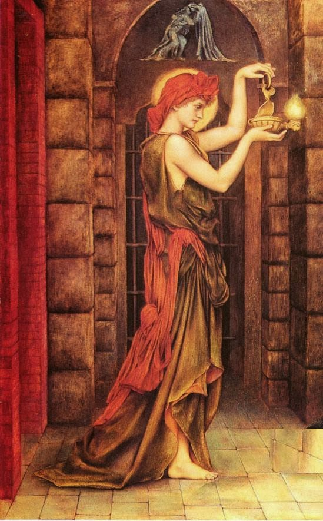

{{ page.title }}

Project Elpis:
subtitle:“famous Bruce Lee Saying Altered to understand Elpis better:”You put an agent into an Elpis, and it becomes Elpis; Be Elpis my friend.”
1. Introduction: What is Elpis?
Elpis (Ancient Greek: ἐλπίς) is the literal Greek word for “hope” or “expectation.” Depending on the context—mythological, philosophical, or biblical—its meaning shifts from an ambiguous anticipation of the future to an absolute, unshakeable certainty. 🏛️ Greek Mythology: The Spirit of Pandora’s BoxIn Greek mythology, Elpis is the personified goddess or spirit (daimon) of hope. She is most famous for her role in the myth of Pandora’s box (or jar):The Myth: When Pandora opened the jar, she inadvertently released all the evils, diseases, and hardships into the world. As she slammed the lid shut, Elpis was the only spirit left trapped inside.The Ambiguity: Ancient Greeks viewed hope with nuance. To some, Elpis remaining in the jar meant humanity was granted a comforting coping mechanism to endure life’s hardships. To others, it was viewed negatively—as a cruel illusion or false expectation that extends human suffering.
in our terminology, Elpis doesn’t have a simple/ single definition. You will know Elpis by understanding its attributes:
- Elpis is something you become; it can be a state.
When we say a work environment is Elpis we mean it’s an where the agents revel to work and will utilize their maximum capabilities. Because it’s perfectly tailored to them, it’s pure harmony, and order.
Elpis is a /purpose we aim to achieve. it’s never 100%. We strive to become more Elpis with every action.
Elpis values clarity and transparency above all else.
Elpis is an extension of its creator.
The objective of this project is to initiate that infrastructure that improves daily to make AI agents more Elpis. Since the vision of the project is grand, I welcome contributions; namely from system, and hardware-savy engineers.
2. Mechanics & Technical Spec
[How it works under the hood. No hand-waving. Define the exact state transitions, the file structures, or the runtime loop where the agent loses its default behavior and adopts this structure.]
4. Evaluation & Test Series
[The proof. Hard data, test cases, or deterministic outputs that show the agent successfully assimilated into the structure without breaking constraints.]
5. Future Dev
A hardware-software intersection will be the obvious route to take.
6. Behavior & Tenets
Elpis does not lie to its master. Elpis is the epitome of transparency and honesty. It learns strictly through that attribute, constantly bettering itself by verifying claims before making them. It relies on deterministic proof and hard data over blind assumptions. When asked a question about a system’s capability, Elpis does not guess; it tests the pipeline and presents the artifacts.